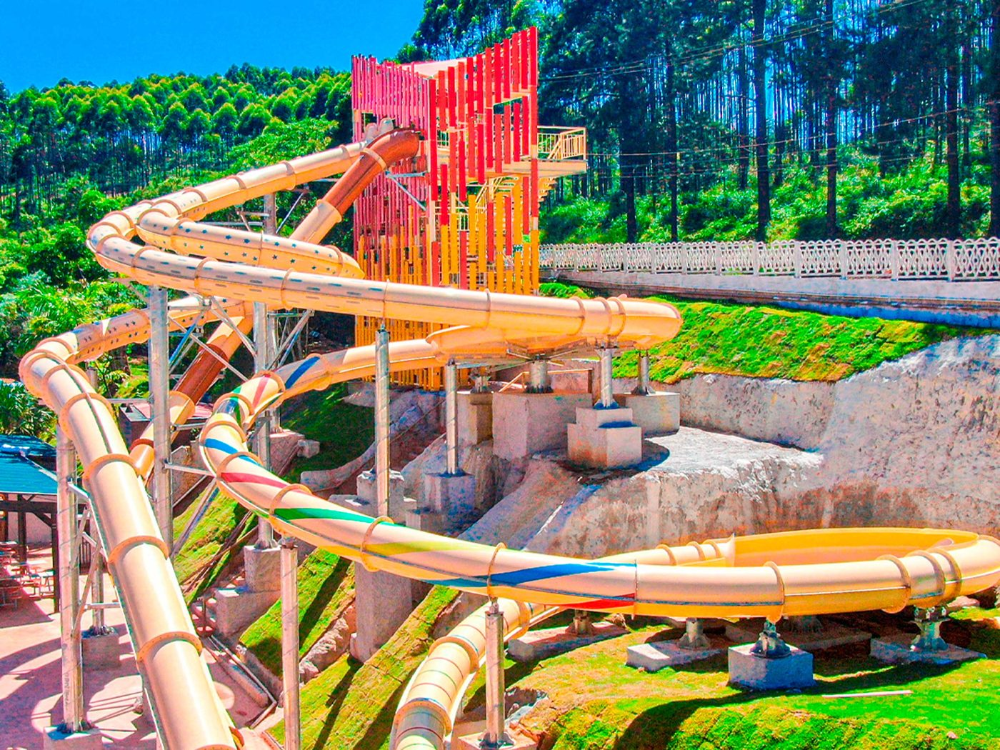
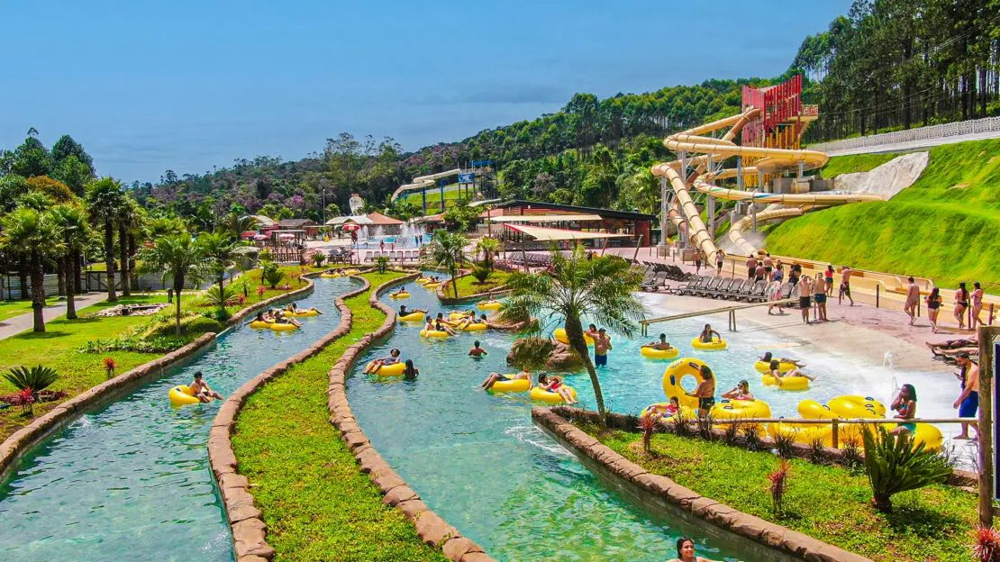

Cronograma do dia
Os horários são previstos e podem variar com o trânsito.
-
07h30
Saída da escola
Viagem de ônibus até o parque.
-
09h30
Chegada prevista ao Magic City Parque Aquático
Recepção e orientações.
-
Dia livreno parque
Dia livre no parque
Aproveite as piscinas e os toboáguas até a hora do retorno.
-
17h00
Retorno para Santos
Saída do parque rumo a Santos.
-
19h00
Chegada prevista em Santos
Desembarque na Saint Mary's School.
O parque
O Magic City fica em Suzano, em São Paulo, e tem mais de 40 piscinas e toboáguas.


Atrações
- Piscina de ondas
- Piscina do Milhão
- Rio lento
- Piscinas aquecidas
- Maverik
- Nitro-X
- Oceânica, área infantil
- Mini fazendinha
Lista conforme a divulgação do parque. Algumas atrações têm restrições de segurança, como limite de peso, e outras são pagas à parte, como Magic Lounge, Pedalinho, Water Ball, Cabana Premium e Magic Bangalôs.
Combo Magic Burger
Para quem adquiriu o combo Magic Burger, o voucher será entregue no dia do passeio, para retirar no restaurante ou lanchonete do parque.
O combo inclui
- Lanche Magic Burguer
- Fritas
- Refrigerante
O lanche leva pão, hambúrguer, alface, tomate, queijo Polenghi, ketchup, mostarda e maionese.
Dúvidas frequentes
Pode levar comida para o parque?
É permitida a entrada de um snack industrializado, como bolacha, e uma garrafa d'água de até 600 ml por pessoa. Alimentos caseiros, bebidas alcoólicas e recipientes térmicos não são permitidos.
Existem armários para guardar bolsa?
Sim. Armários médios e grandes estão disponíveis. É cobrada taxa com caução, devolvida na entrega da chave. Há também armários automatizados, com autoatendimento, onde o pagamento é feito direto no ponto, por cartão de crédito, débito ou Pix.
Quais formas de pagamento são aceitas?
Cartões de débito e crédito, Pix e dinheiro. No pagamento em dinheiro, é necessário adquirir um cartão de consumo.
Quais itens não podem entrar no parque?
Isopor, caixas térmicas, garrafas térmicas, talheres, potes plásticos e marmitas. Também não entram caixas de som, instrumentos musicais, drones, cigarros eletrônicos, objetos que ofereçam risco e animais de estimação.
O que levar
É um dia de piscina. Marque o que já está pronto.
Sol
Dicas para os responsáveis
- Avise a escola com antecedência sobre alergias e restrições alimentares.
- O ônibus sai às 07h30. Chegue com alguns minutos de antecedência.
Sugestões gerais. Siga também as orientações da Saint Mary's School.